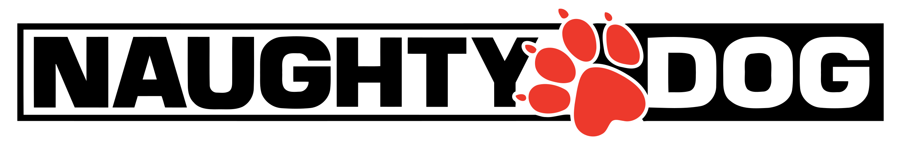

History
Jason Rubin and Andy Gavin met as pre-teens in 1982 at a weekend Hebrew school in Virginia. After they discovered a mutual interest in computers and video games, they began regularly discussing programming, game development, and game piracy during class. Having experimented with Lisp and C++, Rubin and Gavin teamed up with a friend, Mike Goyet, and founded JAM Software in 1984. The acronym "JAM" stood for "Jason, Andy and Mike"; however, when Goyet became uninterested in the work and did not contribute to JAM's operations, Rubin and Gavin bought back his share of the company (about US$100) within months and the acronym was redefined as "Jason and Andy's Magic". Rubin and Gavin chose to create software for the Apple II and decided to create a skiing game for their second title. During production of the game, Gavin accidentally copied bootleg games over the only copy of the skiing game they had. Rubin then created a new skiing game called Ski Crazed (originally titled Ski Stud) within the weekend. The game played slowly, but Gavin reprogrammed the game to play quicker. Later, the game was gathered and published by Baudville, who bought the game from Jam Software for $250. Ski Crazed sold more than 1,000 copies. Rubin and Gavin created an Apple IIGS graphic adventure game titled Dream Zone, which was released in 1988 and ported to the Atari ST, Amiga and PCs.
In 1989, Rubin and Gavin released a game titled Keef the Thief, which was published by Electronic Arts for the Apple IIGS, Amiga and PCs. To make a fresh start and to dissolve their relationship with Baudville, Rubin and Gavin renamed Jam Software as Naughty Dog on September 9, 1989. Naughty Dog also created and developed Rings of Power, which was published by Electronic Arts for the Sega Genesis in 1991. Rubin and Gavin were joined on the title by programmer Vijay Pande, who would later become better known for orchestrating the distributed computing disease researching project known as Folding@home at Stanford University.
In 1994, Rubin and Gavin produced the 3DO Interactive Multiplayer title Way of the Warrior and presented it to Mark Cerny of Universal Interactive Studios. Cerny was pleased with Way of the Warrior and signed Naughty Dog on to Universal Interactive Studios for three additional games. Rubin and Gavin devised a plan to create a three-dimensional action-platform game. Because the player would be forced to constantly look at the character's rear, the game was jokingly codenamed "Sonic's Ass Game".
Production of the game began in 1994, during which Naughty Dog expanded its number of employees and invented a development tool called Game Oriented Object Lisp, to create the characters and gameplay. Cartoonists Charles Zembillas and Joe Pearson were recruited to create the characters of the game, which resulted in the titular character Crash Bandicoot. After 14 months of development, the game was shown to Sony Computer Entertainment, who then signed on to publish the game. Crash Bandicoot was shown to the public for the first time at E3 and went on to become one of the highest-selling titles for the PlayStation console, selling over 6.8 million copies.
Naughty Dog continued to develop two more Crash Bandicoot games, with a spin-off Crash Team Racing kart racing game. By then the studio was looking to develop games for Sony and not be constrained by Universal Interactive. Since Universal held the rights to the Crash Bandicoot series, Naughty Dog could not develop future games in its own right. The studio would be bought out by Sony in 2001 to avoid a repeat while it focused on developing the first game of the Jak and Daxter series. The Jak and Daxter games met similar success as the Crash Bandicoot games. During the development of Jak 3 and Jak X: Combat Racing games, Rubin and Gavin slowly transitioned Evan Wells and Stephen White to become co-presidents of Naughty Dog by the time the founders left the studio. White was replaced by Christophe Balestra after a year.
In 2007, Naughty Dog began work on the Uncharted series, and made their first approach to realistic worlds and characters, in contrast to their Crash Bandicoot and Jak and Daxter series, which featured fantastical worlds set in a fictional setting. The Uncharted franchise has been praised for its cinematic quality and technical proficiency, and has sold nearly 17 million copies worldwide as of April 2012.
From Wikipedia, the free encyclopedia